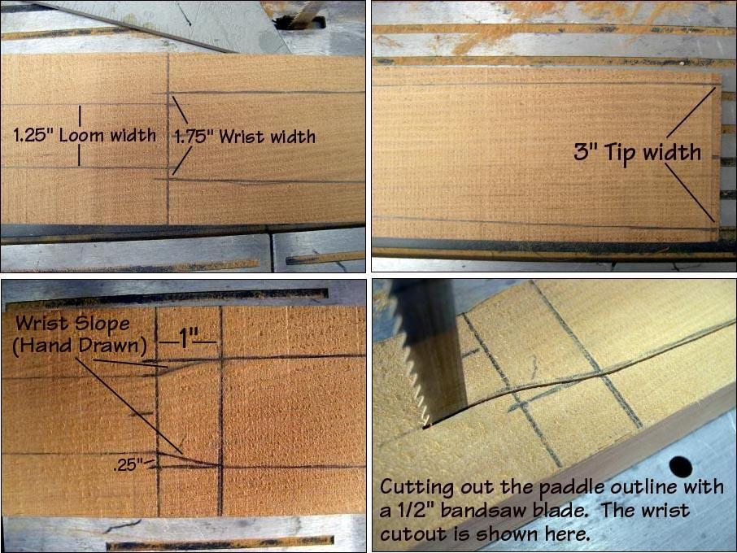

| Greenland Paddle Construction | Menu Previous Page Next Page |
|
 After drawing the blade and loom outline as shown above and in the earlier drawings, bandsaw along each side starting from tip to tip. Move slowly, and stay as close to the lines as possible. Pay particular attention when cutting along the sloped "wrist" area. |
|